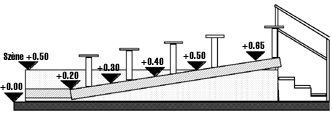

|
TECHNISCHE ANFORDERUNGEN
- Das Zelt hat einen Durchmesser von 20 Metern, verfügt über 500 Sitzplätze und ist eine in sich stehende Konstruktion, d.h. es sind keine Abspannungen notwendig (s. Prüfbuch Nr. 22-2615.4-83/13/94 Regierungspräsidium Stuttgart)
- QUE-CIR-QUE bringt alle zur Vorstellungen notwendigen Gerätschaften mit, ebenso technisches und künstlerisches Personal
- Zeltverankerung zum Boden muß gewährleistet sein, entweder mittels
Eisenanker (1m Stahlnägel, 50 mm Durchmesser) oder “Hilty - Dübeln” für Beton (Beachte! unterirdische Leitungen für Strom, Telephon oder Wasser/Abwasser)
- Wohn und Gerätewagen werden um das Zelt gruppiert, - während des Gastspieles ist der Platz unser Lebensraum und muß über ein Mindestmaß an Lebensqualität verfügen
|
|
|  | |
|
QUE-CIR-QUE Auf- und Abbau:
- Arbeitszeit lt. Anweisung des technischen Leiters von QUE-CIR-QUE - zum Abbau werden sechs stage - hands am Tag nach der letzten Vorstellung benöt - Verpflegung und Getränke (Wasser, Limonade) während des Auf- und Abbaus für alle - zwei Ruhetage vor der Première
- ca 100m Abschrankung oder Zaun - einen Elektroanschluß 3x125 Ampère (CEE 125),Verteiler werden gestellt - ein Trinkwasseranschluß in ca 100m Umkreis - Abwasserabzuleitungen
- einen Büro - Container ausgestattet mit zwei internationalen Zeit- Telefonanschlüssen - einen Dusch- und Sanitärcontainer für QUE-CIR-QUE -Mitglieder - Toiletten für Publikum (Bitte keine Chemie-Toiletten) - ein Abfallcontainer - in kalten Jahreszeiten zwei Heizungen, jede mit etwa 80.000 kcal/h inkl. Tanks und Heizöl - ein Kran, um einen 40 Fußcontainer von ca 25 Tonnen zu be- und entladen - Einlaßkontrolle, 3 Personen für drei Eingänge - Nachtwache
- die Logistik für die Bar wird von QUE-CIR-QUE gestellt
- wir bitten jene drei Personen an unserer Generalprobe teilzunehmen, welche normalerweise einen Tag vor unserer Première stattfindet - wenn eine Lizenz benötigt wird, um Bier, Wein, Säfte und Wasser auszuschenken, bitten wir die Veranstalter, diese zu beantragen - einen Lieferanten für die Getränke und Biergläser (150 St.),
- QUE-CIR-QUE gibt keine Nachmittagsvorstellungen
- wir bitten die Texte, welche Que-Cir-Que präsentieren, uns vor Veröffentlichung vorzulegen - QUE-CIR-QUE bittet beim Drucken von Werbebroschüren, Flugzetteln und Plakaten ausschließlich Fotos mit den 3 Artisten zu verwenden. - bitte für die Artisten keine Interviews an freien Tagen planen
- wenn keine Wohnwagen zur Verfügung gestellt werden können, bevorzugen wir Wohnungen oder Häuser mit Kochmöglichkeit - einen Garderoben-Container für die Artisten - ein Zelt (3m x 3m) als technische-Zone, um unsere Hauptelektroanschlüsse zu beschützen
- Transport 36 FF/km - per Diems für alle Mitglieder, sofern nicht in eigenen Wohnwagen gewohnt werden kann, insbes. in Übersee. Version 01.98 | |